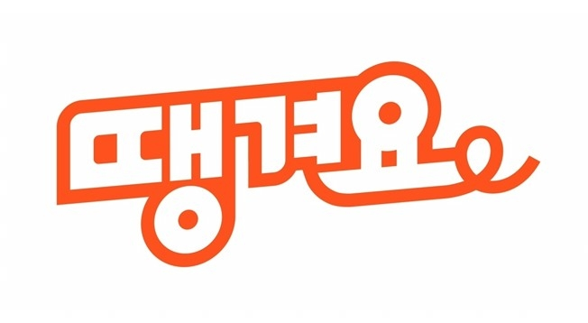

<div id="ajax-page" class="ajax-page-content">
    <div class="ajax-page-wrapper">
        <div class="ajax-page-nav">
            <div class="nav-item ajax-page-prev-next">
                <a class="ajax-page-load" href="portfolio-airlc.html"><i class="lnr lnr-chevron-left"></i></a>
                <a class="ajax-page-load" href="portfolio-hyundai.html"><i class="lnr lnr-chevron-right"></i></a>
            </div>
            <div class="nav-item ajax-page-close-button">
                <a id="ajax-page-close-button" href="#"><i class="lnr lnr-cross"></i></a>
            </div>
        </div>

        <div class="ajax-page-title">
            <h1>신한은행 O2O 플랫폼 배달앱 땡겨요</h1>
        </div>

        <div class="row">
            <div class="col-sm-8 col-md-8 portfolio-block">
                <div class="owl-carousel portfolio-page-carousel">
                    <div class="item">
                        
                    </div>
                </div>

                <script type="text/javascript">
                    jQuery(document).ready(function($){
                        $('.portfolio-page-carousel').imagesLoaded(function(){
                            $('.portfolio-page-carousel').owlCarousel({
                                smartSpeed:1200,
                                items: 1,
                                loop: true,
                                dots: true,
                                nav: true,
                                navText: false,
                                margin: 10,
                                autoHeight:true
                            });
                        });
                    });
                </script>
            </div>

            <div class="col-sm-4 col-md-4 portfolio-block">
                <!-- Project Description -->
                <div class="project-description">
                    <div class="block-title">
                        <h3>Description</h3>
                    </div>
                    <ul class="project-general-info">
                        <li><p><i class="fa fa-user"></i> DoHoon Lee</p></li>
                        <li><p><i class="fa fa-globe"></i> 해당 소스의 저작권은 기업에게 있습니다.</p></li>
                        <li><p><i class="fa fa-calendar"></i> 2021.08 - 2021.12</p></li>
                    </ul>

                    <p class="text-justify">
                        신한은행 배달앱인 땡겨요의 백오피스 파트를 맡았습니다.</br>
                        백오피스 파트는 주로 기초 데이터 제공, 운영자 데이터 Handling, 사용자 데이터 Handling 등을 맡아서 진행하였습니다.</br>
                    </p>
                    <!-- /Project Description -->
                    
                    <!-- Project Team -->
                    <div class="tags-block"></div>
                        <div class="block-title">
                            <h3>Team</h3>
                        </div>

                        <p class="text-justify">
                            본 프로젝트는 백엔드, 프론트엔드를 따로 구분짓지 않았으며, 각 기능별로 인원을 배정하여 업무를 진행하였습니다.</br>
                            제가 맡은 기능은 SpringBoot를 활용한 회원 인증, 사용자 관리, AML 기능 개발, 메뉴 권한 관리, 기본 제공 이미지 관리, 고객문의 접수를 맡았습니다.
                        </p>
                    </div>
                    <!-- /Project Review -->

                    <!-- Project Review -->
                    <div class="tags-block"></div>
                        <div class="block-title">
                            <h3>Review</h3>
                        </div>

                        <p class="text-justify">
                            이번 프로젝트는 처음으로 프리랜서로 프로젝트를 참여해봤으며, 제가 경험해본 가장 규모가 큰 SI 프로젝트였습니다.
                            독립된 업무도 있었으나, 대부분은 각 파트별로 연관이 되어 있다보니, 업무 진행도가 상당히 중요했습니다.
                            해당 기능 구현을 위해 설계를 하여, 뼈대를 잡고 구현을 시작하여도 추가 요구사항과 버그로 코드는 지저분하게 되었습니다.
                            하지만 급하게 진행되는 일정속에서 리팩터링은 기대하기 힘든 상황이었습니다.</br>
                            담당자가 교체되거나 시간이 꽤 지난 소스를 수정하는 경우가 있었습니다.
                            리팩터링이 안된 코드의 파악은 파악하는데 꽤 많은 시간을 투자하게 만들었습니다.</br>
                            </br>
                            많이 고심하고, 잘 짠 소스라 하더라도 리팩터링 과정 중 소스의 수정이 발생한다고 합니다.
                            더군다나 빠듯한 일정속에서 초급개발자가 개발한 소스는 상당한 수정이 필요할 것입니다.
                            하지만 대다수의 SI 프로젝트는 일정에 쫒겨 리팩터링 과정이 생략되는 경우도 많다고 합니다.</br>
                            </br>
                            이 경험을 통해 앞으로 회사와 프로젝트 선택에 중요한 기준을 주었습니다.
                            기능 구현도 중요하지만, 소스의 통일화, 모듈화, 구조화를 위한 리팩터링이 더욱 중요한 것을 깨달았습니다.
                            리팩터링의 중요성을 잊지 않고, 모든 상황에 리팩터링을 하는 개발자 이도훈이 될 것입니다.
                        </p>
                    </div>
                    <!-- /Project Review -->

                    <!-- Technology -->
                    <div class="tags-block">
                        <div class="block-title">
                            <h3>Technology</h3>
                        </div>
                        <ul class="tags">
                            <li><a>Websquare</a></li>
                            <li><a>JavaScript</a></li>
                            <li><a>Vanilla JS</a></li>
                            <li><a>JAVA</a></li>
                            <li><a>REST API</a></li>
                            <li><a>SpringBoot</a></li>
                            <li><a>Linux</a></li>
                            <li><a>AWS</a></li>
                            <li><a>Redis</a></li>
                            <li><a>MyBatis</a></li>
                            <li><a>Maven</a></li>
                            <li><a>Postgresql</a></li>
                        </ul>
                    </div>
                    <!-- /Technology -->
                </div>
                <!-- Project Description -->
            </div>
        </div>
    </div>
</div>
